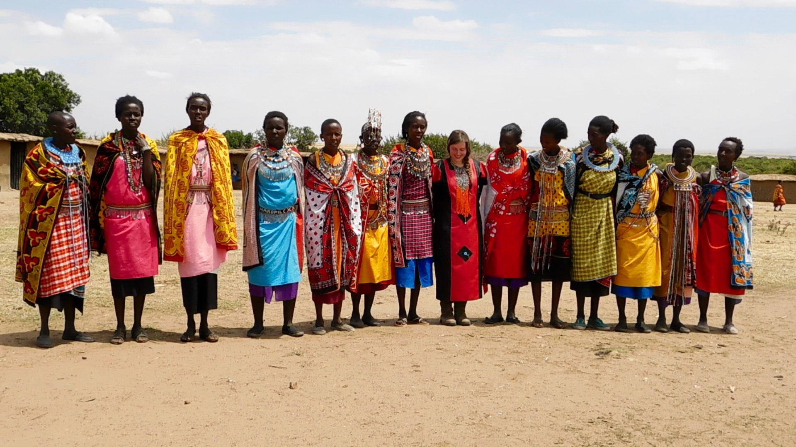
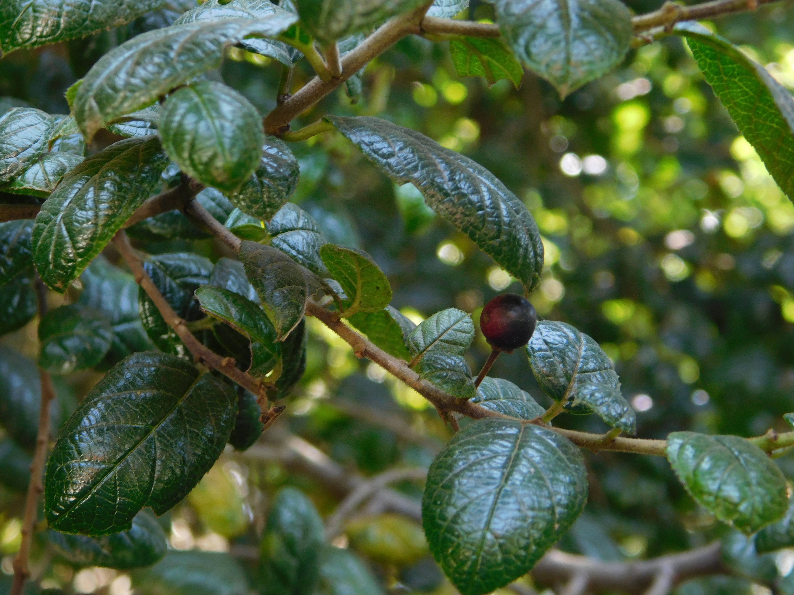

Community projects in the Maasai Mara
The Maasai Mara is part of the route of arguably the most amazing natural event on earth: the great migration. When two million wildebeest, two hundred thousand zebra, and five hundred thousand antelope (eland and thompson gazelle) travel to follow the rains and long grass. Some of the richest people in the world come to watch this incredible event, every year. Yet many of the local inhabitants in this area are some of the poorest in the world.
Although rich people come, and spend a lot of money on luxury safaris in this area, the money spent in the area, too often does not reach local people because much of the land, camps, vehicles, and other resources are not owned by locals (or often not even by Kenyans). I am working in this area to try and build community resources and businesses that enable local people to reap the benefits of tourism in the area. At the same time I am trying to encourage more cultural exchange for tourists. Getting to know people from a place very different to where I am from has opened my eyes and enriched my life immesurably. This is an experience that I would like to share with other visitors, and also with local people here, as I believe we can learn the most from people who are different to us.
Automated safari data collection
Every day people go out for game drives in the Maasai Mara, to observe animals in their natural habitat. Yet scientifically, the area is relatively unknown. We are building hardware and software solutions for studying the area, passively. We are starting by mounting a camera rig on top of safari vehicles, with a gps recorder. This will enable us to build detailed "street" maps of the area. We'll also be collaborating with research groups to record animal sightings, and behaviour. Finally we will use the technologies we build to develop educational resources to help tourists and local people to engage responsibly with the natural world.

Kimaasai/Maa language learning tool
The Maasai are a semi-nomadic tribe occupying much of south western Kenya and Tanzania. The language of the Maasai people, technically, Maa, but known locally as Kimaasai (the name of the language in Swahili), is one of 68 languages spoken in Kenya. There are very few resources for learning Kimaasai, and it is mostly used in speech (rather than writing), making it difficult to learn as an outsider. This challenge got me excited, so I have been learning Kimaasai, by employing a maasai teacher, recording phrases, and working out the grammatical rules. I will be sharing this resource so that others can learn kimaasai too.

Kiswahili translator
Swahili is a huge language, spoken across East and South East Africa, thought to be used by around 100 million speakers. However google translate is not reliable with even the most simple phrases or words, and it is clear that Swahili has not been given the attention that Western (often much smaller) languages have had. Swahili grammar involves changing verbs by adding prefixes and infixes to confer grammatical meaning, and to agree with a noun. Composite verbs - those containing prefixes and infixes - are often not known to online translators. However swahili is an extremely formulaic and regular language, and so lends itself well to automated parsing tools. I am building a translator (Swahili -> English and English -> Swahili) that is able to deal with infixes and prefixes.

Kiswahili and Kimaasai children's books
We have lived in Kenya since our son was 11 months old, and now one year on, he speaks very good swahili, but very little english so far. We were disappointed to not be able to find any good swahili children's books here. Maybe they exisit (I haven't done a thorough search), but I know that certainly there isn't the range and quality of english language books, and none are readily available anywhere I have been. So I decided to make some children's books in Kiswahili and Kimaasai. Starting with simple 'ABC' vocab type books, and then moving on to simple stories.

Maasai useful plants database
The Maasai Mara and surrounding areas have a vast diversity of plant life which allows the ecosystem to keep running and support the many popular large mammals. The Maasai people have a great knowledge of their local flora, including recipes for a diversity of medicines and herbal teas. We have put together a list of plants known to occur in the Maasai lands, and have consulted with local experts to find out how they are used in traditional Maasai life. This will uploaded soon as a searchable database, complete with images of all the plants.
